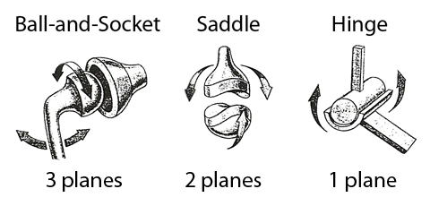
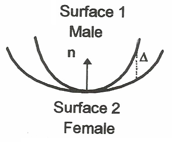
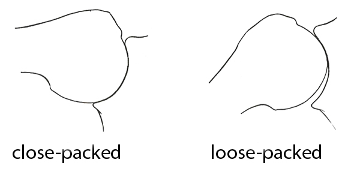
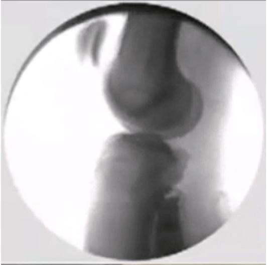
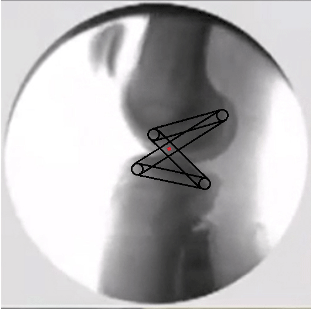
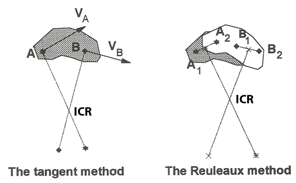
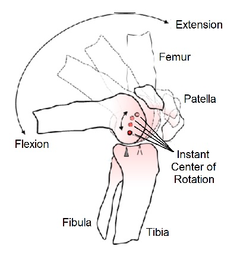

Joint Geometry and Joint Kinematics
In the previous lectures, we assumed that joints allowed rotations about a fixed axis in an anatomical plane (sagittal, frontal , or transverse). These "geometrically ideal" joints are used often in biomechanics when examining gross motor tasks such as walking, running, whole body occupational and sports tasks, etc. However, no human joint is geometrically ideal and this lecture looks more closely at the true nature of joints and joint motion.

Joint Surfaces:
The articular surfaces of joints are not flat. They have a curvature that is either concave or convex. The two mating articular surfaces are labeled as male (convex) and female (concave). Examples of geometrically ideal joints are shown on the right. The ball-and-socket joint moves in three planes (hip, shoulder), the saddle joint moves in two planes (carpals, tarsals and phalanges), and the hinge joint moves in one plane (elbow, knee).
The surface curvature is not geometrically ideal in actual joints and the incongruity between the surfaces reduces the contact areas and therefore increases the contact pressure. Large local stress can damage articular cartilage and lead to joint diseases such as osteoarthritis and bursitis.

The congruence of two joint surfaces is measured by mapping the surface curvature of the male and female ends of the bones and calculating the difference (see Δ in the diagram). The Δ values are calculated over the range of motion and a single value is assigned from the root means square (RMS). The smaller the value of Δ, the higher the degree of congruence.
Ateshian, et al. (1992) examined the congruence of the thumb Carpometacarpal joints in men and women because it was known that women have a greater prevalence of osteoarthritis than men. Their results showed that women had significantly less congruent joint surfaces. This may indicate that under similar loading conditions during occupational tasks such as pinching and grasping, women may experience higher stress and increased risk of joint disease.
Movement of the Articular Surfaces:

Since joints are not geometrically ideal, the level of congruency changes throughout the range of motion. The figure to the right shows the glenohermeral joint at maximum congruency when the arm is fully abducted (left) and becomes less congruent as the arm is adducted (right). When the humerus is abducted and the male surface is in contact with the female surface at each point (fully congruent), the position is called "close-packed". When less than fully congruent, the position is called "loose-packed".

Joint motion has two classifications. The two surfaces can be rolling or sliding past each other and in most joints the motion is a combination of both. The movie on left is a fluoroscopic (moving Xray) capture of a healthy human knee joint of a man performing a lunge. As he lunges forward and his knee moves into flexion, we can see the femur rolling over the top of the tibia. However, it is also sliding forward so the femur does not roll off the back of the tibia. This is also seen in the shoulder and other joints.

The relative amounts of rolling and sliding is called the "slip ratio". Referring to the diagram on the right, consider a point on the concave surface where the two articulating bones touch in the fully extended joint and call this point "a". Also, consider a point on the convex surface when the two bones touch in the fully flexed position and call this point "c". Finally, locate a point on the concave surface where the two bones touch when the joint is fully flexed and call this point "b". The slip ratio for this range is calculated as the ratio of the arc length from a to b (represented by the red line) divided by the arc length from a to c (represented by the green line). A ratio of 1 occurs when the two arc lengths are equal which represents pure rolling. A ratio occurs when the arc length from a to b is zero and this represents pure slipping.
In an ideal hinge, the male surface would spin inside a close-packed female surface of the same curvature and the slip ratio would be zero. The slip ratio can be calculated for smaller ranges of joint motion and can change throughout the range of joint motion. The amount of slipping and rolling depends on the shapes of the male and female surfaces as well as the constraints of the ligaments (see 4-bar linkage discussion below). When reconstructing the ACL with a graft, it is important to use the same length and attachment points as the original ligament to prevent permanent sliding with the same contact point on the tibial surface which could lead to excessive wear at that point.
Geometry and Articular Motion:

Codman's paradox is a sequence of shoulder
rotations that produce a rotation about the long axis of the humerus
without performing axial rotation. Using the figure on the right and
assuming the individual starts with their arm hanging down at their
side with their palm facing backward (thumb pointing medially). Now the
person performs forward flexion (90o
rotation about the negative X-axis), followed by horizontal
extension (90o rotation about the positive
Y-axis) and finally adduction (90o degree
rotation about the negative Z-axis). The final position has the thumb
pointing anteriorly and a 90 degree rotation has been performed about
the long axis without ever performing the lateral rotation. If you
repeat this sequence again, your thumb will be pointing laterally.
Infraspinatus is a major lateral rotator of the shoulder but we could
achieve lateral rotation without using that muscle if we followed
Codman's paradox.
Codman's paradox is not really a paradox because joint angular rotations are not commutative. Rotation about X plus rotation about Z is not equal to rotation about Z plus rotation about X. However, it is important to know the different strategies that can be employed to achieve various movements in order to decide which is the most beneficial.

Articular motion is not only governed by the geometry of the joint and the articulating surfaces but also by the ligaments. The knee joint is a classic example of how the rolling and sliding motion is governed by the anterior cruciate ligament (ACL) and the posterior collateral ligament (PCL). The fluoroscopic capture above is shown on the right with a four bar linkage system representing the femur, tibia, ACL and PCL. The red dot at the intersection of the two ligaments shows the center of rotation. We tend to think that the role of the ACL is to prevent anterior dislocation of the tibia and the PCL prevents posterior dislocation. In addition to these roles, these ligaments define the motion of the knee joint. We can see that the center of rotation is not a fixed point within the male surface as would be the case for an ideal hinge joint.
Orthopedic surgeons take great care to position tendon grafts as close as possible to the original attachments so as not to alter the joint moment. Manufacturers of artificial joint replacement prostheses also incorporate four-bar linkages and other couplings to simulate the non-ideal joints that are being replaced.
We have previously calculated the moment of force caused by a muscle crossing a joint. In static equilibrium we used the moment arm as the perpendicular distance between the line of action of the muscle and the joint axis. In 3-D moments we used the cross product of the force and the position vector which was considered to the displacement from the axis of rotation to the point of force application. In both cases, we assumed a fixed center of rotation as the axis which is not always correct.

When a rigid body moves through space, it has an instant center of rotation (ICR) that can be calculated if we have two identifiable points on the body. The figure to the right shows two methods of calculating the ICR. The tangent method uses the instantaneous velocities of the two points and then finds the intersection of their normals. The Reuleaux method uses the finite displacements of the two points and then finds the intersection of perpendicular lines drawn from the midpoints of those displacements. Mathematically, both methods are correct but in practice, both are prone to large errors with very small errors in displacement. Also, the ICR path can be quite different under loading conditions when compared to unloaded or passive movement. In spite of errors, when great care is taken to measure the ICR accurately, it can be a good diagnostic tool to compare a pathological joint with a healthy joint.

Conclusion:
We assume ideal joints when calculating joint reaction forces and net joint moments. The fact that many joints are not ideal joints does not not affect those calculations appreciably. However, when we need to look closely at the joint, the structural differences may influence our decisions even if the magnitudes of the forces and moments do not change.
Reference:
Ateshian, G.A., et al. (1992) Journal of Biomechanics. 25:591-607.